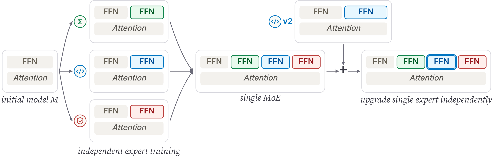

I'm an undergrad at UC Berkeley advised by Sewon Min. I'm interested in understanding and improving language model capabilities, particularly under real-world constraints.
Publications
-

Train Separately, Merge Together: Modular Post-Training with Mixture-of-ExpertsWe present BAR (Branch-Adapt-Route), a recipe for modular post-training. Rather than training a single model on all data at once, BAR trains independent domain experts – each through its own complete training pipeline – and composes them into a unified model via a mixture-of-experts (MoE) architecture. Each expert can be developed, upgraded, or replaced without touching the others.
* equal contribution
Industry Experience
- Jane Street, Machine Learning Engineer Intern Summer 2026
- Google, Software Engineer Intern May – Aug 2025
- Apple, Machine Learning Engineer Intern Mar – May 2025